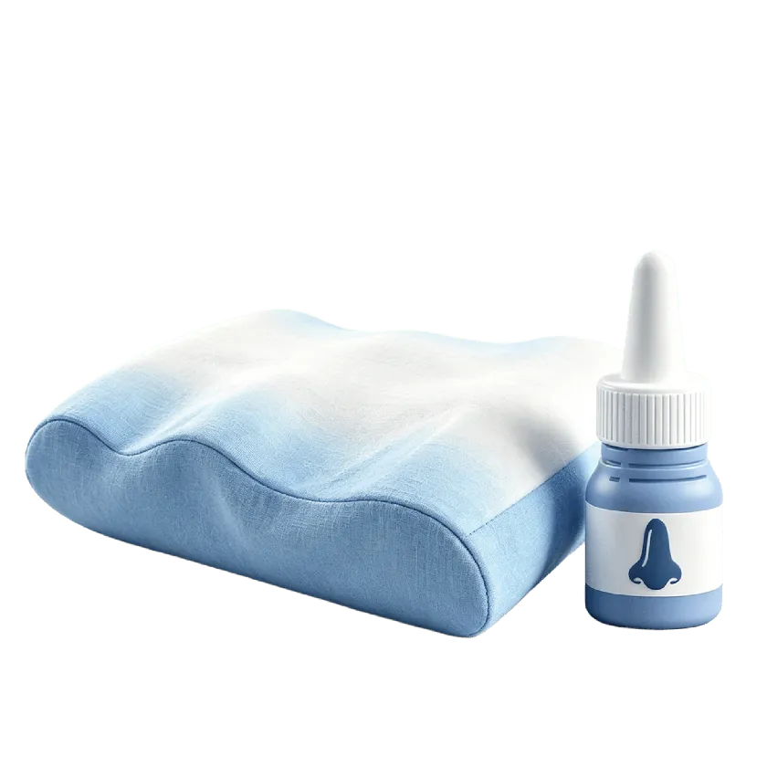

主題介紹
睡眠呼吸中止症（Obstructive Sleep Apnea，OSA）是一種睡眠中上呼吸道反覆塌陷、導致呼吸暫停或變淺的疾病。每次呼吸中止可能持續數秒到數十秒，一個晚上可發生數十至數百次，嚴重影響睡眠品質與血氧濃度。
打呼是最常見的症狀，但並非所有打呼都代表睡眠呼吸中止症；若有懷疑，建議透過睡眠檢查確認診斷後，再決定適合的治療方式。
如何辨識
若有以上多項症狀，建議諮詢耳鼻喉科醫師，評估是否需要進行睡眠檢查。
如何確診
在家配戴輕便裝置進行，監測呼吸、血氧及心跳。費用較低、無需住院，適合懷疑中重度患者的初步篩檢。
在醫院睡眠中心過夜，監測腦波、眼動、肌電圖、呼吸、血氧等多項指標。診斷最為完整精確。
報告判讀
AHI（Apnea-Hypopnea Index）指每小時發生呼吸中止或呼吸變淺的次數，是判斷睡眠呼吸中止症嚴重程度的主要指標。
SEO 主題索引
點選主題了解詳細說明，最後導流到蔡醫師 Medify 完整文章
